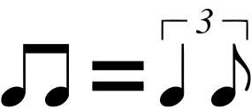
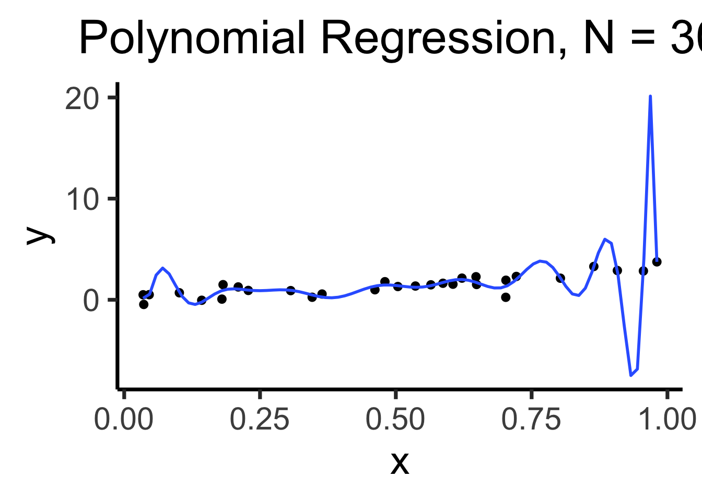
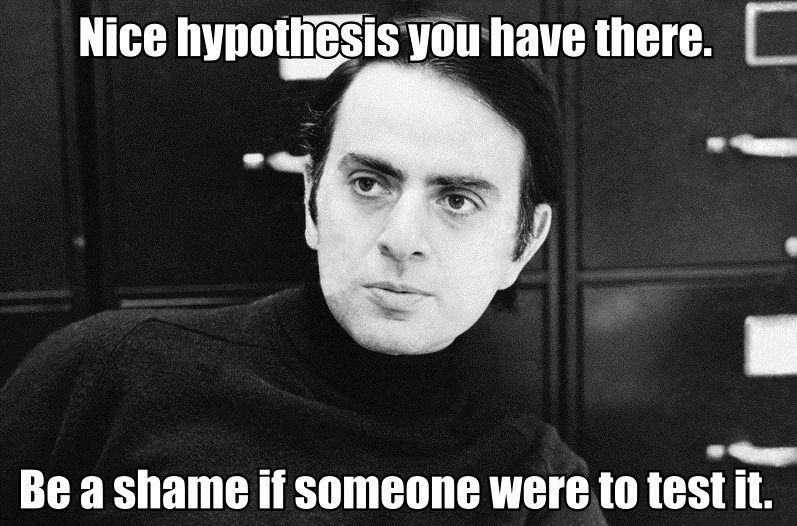

Code
source("../dsan-globals/_globals.r")
set.seed(5300)DSAN 5300: Statistical Learning
Spring 2025, Georgetown University
Today’s Planned Schedule:
| Start | End | Topic | |
|---|---|---|---|
| Lecture | 6:30pm | 6:40pm | Logistic Regression Recap → |
| 6:40pm | 7:00pm | CV and Model Selection Motivation → | |
| 7:00pm | 8:00pm | Anti-Overfitting Toolkit → | |
| Break! | 8:00pm | 8:10pm | |
| 8:10pm | 9:00pm | Quizzo → |
source("../dsan-globals/_globals.r")
set.seed(5300)\[ \DeclareMathOperator*{\argmax}{argmax} \DeclareMathOperator*{\argmin}{argmin} \newcommand{\bigexp}[1]{\exp\mkern-4mu\left[ #1 \right]} \newcommand{\bigexpect}[1]{\mathbb{E}\mkern-4mu \left[ #1 \right]} \newcommand{\definedas}{\overset{\small\text{def}}{=}} \newcommand{\definedalign}{\overset{\phantom{\text{defn}}}{=}} \newcommand{\eqeventual}{\overset{\text{eventually}}{=}} \newcommand{\Err}{\text{Err}} \newcommand{\expect}[1]{\mathbb{E}[#1]} \newcommand{\expectsq}[1]{\mathbb{E}^2[#1]} \newcommand{\fw}[1]{\texttt{#1}} \newcommand{\given}{\mid} \newcommand{\green}[1]{\color{green}{#1}} \newcommand{\heads}{\outcome{heads}} \newcommand{\iid}{\overset{\text{\small{iid}}}{\sim}} \newcommand{\lik}{\mathcal{L}} \newcommand{\loglik}{\ell} \DeclareMathOperator*{\maximize}{maximize} \DeclareMathOperator*{\minimize}{minimize} \newcommand{\mle}{\textsf{ML}} \newcommand{\nimplies}{\;\not\!\!\!\!\implies} \newcommand{\orange}[1]{\color{orange}{#1}} \newcommand{\outcome}[1]{\textsf{#1}} \newcommand{\param}[1]{{\color{purple} #1}} \newcommand{\pgsamplespace}{\{\green{1},\green{2},\green{3},\purp{4},\purp{5},\purp{6}\}} \newcommand{\prob}[1]{P\left( #1 \right)} \newcommand{\purp}[1]{\color{purple}{#1}} \newcommand{\sign}{\text{Sign}} \newcommand{\spacecap}{\; \cap \;} \newcommand{\spacewedge}{\; \wedge \;} \newcommand{\tails}{\outcome{tails}} \newcommand{\Var}[1]{\text{Var}[#1]} \newcommand{\bigVar}[1]{\text{Var}\mkern-4mu \left[ #1 \right]} \]
\[ \begin{align*} &\log\left[ \frac{\Pr(Y = 1 \mid X)}{1 - \Pr(Y = 1 \mid X)} \right] = \beta_0 + \beta_1 X \\ \iff &\Pr(Y = 1 \mid X) = \frac{\exp[\beta_0 + \beta_1X]}{1 + \exp[\beta_0 + \beta_1X]} = \frac{1}{1 + \exp\left[ -(\beta_0 + \beta_1X) \right] } \end{align*} \]
\(\leadsto\) A 1-unit increase in \(X\) is associated with a \(\beta_1\) increase in the log-odds of \(Y\)
| Class Topic | This Video |
|---|---|
| Linear regression | Pachelbel’s Canon in D (1m26s-1m46s) |
| Logistic regression | Add swing:  (1m46s) |
| Neural networks | (triads \(\mapsto\) 7th/9th chords) (5m24s-5m53s) |
Linear Models
Linear Models

library(tidyverse)
set.seed(5300)
N <- 30
x_vals <- runif(N, min=0, max=1)
y_vals_raw <- 3 * x_vals
y_noise <- rnorm(N, mean=0, sd=0.5)
y_vals <- y_vals_raw + y_noise
data_df <- tibble(x=x_vals, y=y_vals)
data_df |> ggplot(aes(x=x, y=y)) +
geom_point(size=2) +
stat_smooth(
method="lm",
formula="y ~ x",
se=FALSE,
linewidth=1
) +
labs(
title = paste0("Linear Regression, N = ",N)
) +
theme_dsan(base_size=28)
data_df |> ggplot(aes(x=x, y=y)) +
geom_point(size=2.5) +
stat_smooth(
method="lm",
formula=y ~ poly(x, N, raw=TRUE),
se=FALSE,
linewidth=1
) +
labs(
title = paste0("Polynomial Regression, N = ",N)
) +
theme_dsan(base_size=28)
x <- seq(from = 0, to = 1, by = 0.1)
n <- length(x)
eps <- rnorm(n, 0, 0.04)
y <- x + eps
# But make one big outlier
midpoint <- ceiling((3/4)*n)
y[midpoint] <- 0
of_data <- tibble::tibble(x=x, y=y)
# Linear model
lin_model <- lm(y ~ x)
# But now polynomial regression
poly_model <- lm(y ~ poly(x, degree = 10, raw=TRUE))
#summary(model)
ggplot(of_data, aes(x=x, y=y)) +
geom_point(size=g_pointsize/2) +
labs(
title = "Training Data",
color = "Model"
) +
theme_dsan(base_size=16)
ggplot(of_data, aes(x=x, y=y)) +
geom_point(size=g_pointsize/2) +
geom_abline(aes(intercept=0, slope=1, color="Linear"), linewidth=1, show.legend = FALSE) +
stat_smooth(method = "lm",
formula = y ~ poly(x, 10, raw=TRUE),
se = FALSE, aes(color="Polynomial")) +
labs(
title = "A Perfect Model?",
color = "Model"
) +
theme_dsan(base_size=16)
How have we measured “good” fit? High \(R^2\)? Low \(RSS\)?
summary(lin_model)$r.squared[1] 0.5679903get_rss(lin_model)[1] 0.5638522summary(poly_model)$r.squared[1] 1get_rss(poly_model)[1] 0# Data setup
x_test <- seq(from = 0, to = 1, by = 0.1)
n_test <- length(x_test)
eps_test <- rnorm(n_test, 0, 0.04)
y_test <- x_test + eps_test
of_data_test <- tibble::tibble(x=x_test, y=y_test)
lin_y_pred_test <- predict(lin_model, as.data.frame(x_test))
#lin_y_pred_test
lin_resids_test <- y_test - lin_y_pred_test
#lin_resids_test
lin_rss_test <- sum(lin_resids_test^2)
#lin_rss_test
# Lin R2 = 1 - RSS/TSS
tss_test <- sum((y_test - mean(y_test))^2)
lin_r2_test <- 1 - (lin_rss_test / tss_test)
#lin_r2_test
# Now the poly model
poly_y_pred_test <- predict(poly_model, as.data.frame(x_test))
poly_resids_test <- y_test - poly_y_pred_test
poly_rss_test <- sum(poly_resids_test^2)
#poly_rss_test
# RSS
poly_r2_test <- 1 - (poly_rss_test / tss_test)
#poly_r2_test
ggplot(of_data, aes(x=x, y=y)) +
stat_smooth(method = "lm",
formula = y ~ poly(x, 10, raw = TRUE),
se = FALSE, aes(color="Polynomial")) +
theme_classic() +
geom_point(data=of_data_test, aes(x=x_test, y=y_test), size=g_pointsize/2) +
geom_abline(aes(intercept=0, slope=1, color="Linear"), linewidth=1, show.legend = FALSE) +
labs(
title = "Evaluation: Unseen Test Data",
color = "Model"
) +
theme_dsan(base_size=16)
lin_r2_test[1] 0.8906269lin_rss_test[1] 0.139159poly_r2_test[1] 0.5237016poly_rss_test[1] 0.6060099
The gist: penalize model complexity
Original optimization:
\[ \theta^* = \underset{\theta}{\operatorname{argmin}} \mathcal{L}(y, \widehat{y}) \]
New optimization:
\[ \theta^* = \underset{\theta}{\operatorname{argmin}} \left[ \lambda \mathcal{L}(y, \widehat{y}) + (1-\lambda) \mathsf{Complexity}(\theta) \right] \]
But how do we measure, and penalize, “complexity”?
\[ \mathsf{Complexity}(\widehat{y} = \beta_0 + \beta_1 x + \beta_2 x^2 + \beta_3 x^3) > \mathsf{Complexity}(\widehat{y} = \beta_0 + \beta_1 x) \]
\[ \mathsf{Complexity} \propto \frac{|\text{AmplifiedFeatures}|}{|\text{ShrunkFeatures}|} \]
\[ \beta^*_{LASSO} = {\underset{\beta}{\operatorname{argmin}}}\left\{{\frac {1}{N}}\left\|y-X\beta \right\|_{2}^{2}+\lambda \|\beta \|_{1}\right\} \]
\[ \beta^*_{EN} = {\underset {\beta }{\operatorname {argmin} }}\left\{ \|y-X\beta \|^{2}_2+\lambda _{2}\|\beta \|^{2}+\lambda _{1}\|\beta \|_{1} \right\} \]
graph grid
{
graph [
overlap=true
]
nodesep=0.0
ranksep=0.0
rankdir="TB"
node [
style="filled",
color=black,
fillcolor=lightblue,
shape=box
]
// uncomment to hide the grid
edge [style=invis]
subgraph cluster_01 {
label="Training Set (80%)"
N1[label="20%"] N2[label="20%"] N3[label="20%"] N4[label="20%"]
}
subgraph cluster_02 {
label="Test Set (20%)"
N5[label="20%",fillcolor=orange]
}
}graph grid
{
graph [
overlap=true,
scale=0.2
]
nodesep=0.0
ranksep=0.0
rankdir="LR"
scale=0.2
node [
style="filled",
color=black,
fillcolor=lightblue,
shape=box
]
// uncomment to hide the grid
edge [style=invis]
subgraph cluster_01 {
label="Training Set (80%)"
subgraph cluster_02 {
label="Training Fold (80%)"
A1[label="16%"] A2[label="16%"] A3[label="16%"] A4[label="16%"]
}
subgraph cluster_03 {
label="Validation Fold (20%)"
B1[label="16%",fillcolor=lightgreen]
}
}
subgraph cluster_04 {
label="Test Set (20%)"
C1[label="20%",fillcolor=orange]
}
A1 -- A2 -- A3 -- A4 -- B1 -- C1;
}Least Absolute Shrinkage and Selection Operator↩︎